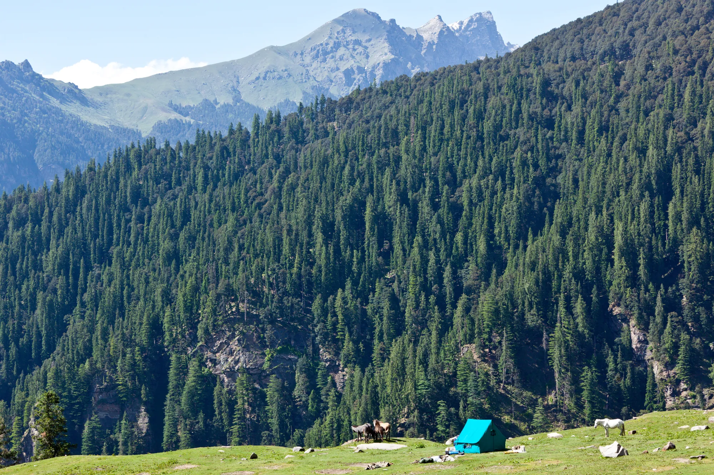
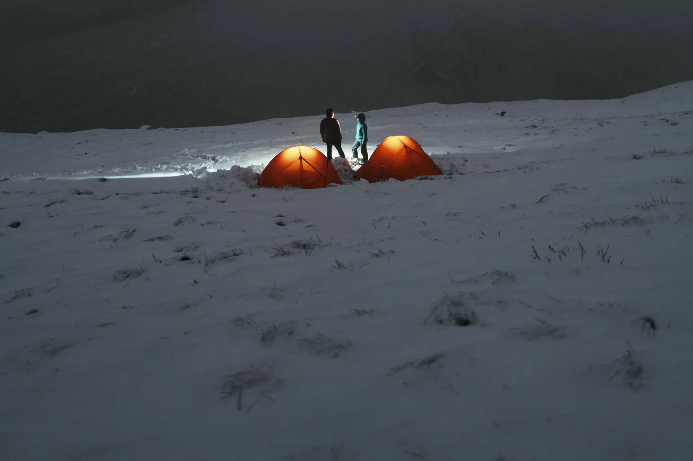

- Watch three numbers: the highest point, each day's climb, and where you sleep. Sleeping altitude matters most for acclimatisation.
- A widely used guideline: above about 3,000 m, raise your sleeping altitude by no more than about 500 m a day.
- On Kedarkantha the big step is day 3 (sleep at 3,413 m); summit day is the hardest walk but you sleep lower after it.
"3,810 m" sounds like one number. On the trail it's five different days, each with its own climb, its own descent and its own night at a new height. Learning to read those days is the most useful planning skill a new trekker can have, both for choosing a trek you'll enjoy and for staying well at altitude.
Three numbers that matter
- Highest point: the top of the trek, often visited for a short time (a summit or a pass).
- Daily gain: how much you climb on a given day. This decides how hard the day feels.
- Sleeping altitude: where you spend the night. Your body adapts to altitude while you rest, so how fast this rises matters most for acclimatisation.

Worked example: Kedarkantha
From the Kedarkantha itinerary (sources linked on the trek page):
| Day | Route | Walking | Sleep at | Change |
|---|---|---|---|---|
| 1 | Dehradun → Sankri (drive) | 8–10 h by road | 1,950 m | – |
| 2 | Sankri → Juda ka Talab | 4 km · about 5 h | 2,773 m | +823 m |
| 3 | Juda ka Talab → Base Camp | 4 km · about 3 h | 3,413 m | +640 m |
| 4 | Summit (3,810 m), then Hargaon | 3 km up + 6 km down · about 7 h | 2,700 m | −713 m |
| 5 | Hargaon → Sankri, drive home | 6 km · 2–4 h | – | – |
What this tells you:
- The hardest walking day is day 4: a pre-dawn climb of about 400 m to the summit, then a long descent.
- The biggest jump in sleeping altitude is day 2 (+823 m), but it stays below 3,000 m.
- Day 3 takes you above 3,000 m to sleep at 3,413 m. That's the night to take it easy, drink water and watch how you feel.
- After the summit you sleep lower (Hargaon, 2,700 m), which helps recovery.
The guideline most trekkers use
The Wilderness Medical Society's clinical guidelines on altitude illness suggest that above about 3,000 m, you avoid raising your sleeping altitude by more than about 500 m a day, and take a rest or acclimatisation day every three to four days. Many popular Himalayan itineraries are close to this; some steps, like Kedarkantha's day 3, are a bit bigger.
That doesn't make a trek unsafe. It means you should know which nights are the big steps and treat them with respect: walk slowly, eat and drink well, and don't push through symptoms. If you're new to altitude, ask your operator whether an extra night is possible, and talk to a doctor before high treks, especially if you have a medical condition.

Know the warning signs
Acute mountain sickness typically starts with a headache plus one or more of: nausea or poor appetite, unusual tiredness or weakness, or dizziness. Mild symptoms often settle with rest at the same height. Symptoms that get worse are a reason to go down, and confusion, loss of balance or breathlessness at rest are emergencies. Tell your trek leader early; there's no prize for hiding it.
How the 3D view helps
A table shows numbers; a 3D flythrough shows where they happen. On Treqz you can see that Kedarkantha's day-2 climb is spread through forest, while the summit push is short and steep on an open ridge. Compare two treks with similar numbers, like Kedarkantha and Brahmatal, and you'll see they spend their height very differently.
Gentler first options in the atlas include Dayara Bugyal (3,750 m, 5 days, graded easy) and the treks in our easy treks guide.
This post is general information for planning, not medical advice. Treqz is a free atlas; we don't run treks.
Quick questions
What is a safe altitude gain per day?
A widely used guideline (Wilderness Medical Society) is: above about 3,000 m, avoid raising your sleeping altitude by more than about 500 m a day, with a rest day every 3–4 days. Your operator and doctor can advise for your trek.
What are the first signs of altitude sickness?
Usually a headache plus nausea or poor appetite, unusual tiredness or weakness, or dizziness. If symptoms get worse, go down; confusion, loss of balance or breathlessness at rest are emergencies.
Is Kedarkantha too high for a beginner?
Many first-timers do it; it's graded easy–moderate in its sources. Treat the first night above 3,000 m with care, and consider a gentler trek like Dayara Bugyal if you're unsure.